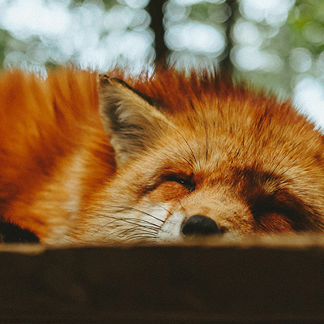

Animais Fantásticos


Raposa
Raposas são pequenos a médios mamíferos onívoros pertencentes a vários gêneros da família Canidae.
As raposas têm o crânio achatado, orelhas triangulares verticais, focinho pontiagudo e ligeiramente arrebitado e uma cauda longa e espessa.
Doze espécies pertencem ao grupo monofilético de "raposas verdadeiras" do gênero Vulpes.
Aproximadamente outras 25 espécies atuais ou extintas são parte do grupo parafilético das raposas sul-americanas ou do grupo periférico, que consiste na raposa-orelhas-de-morcego, raposa-cinzenta e raposa-das-ilhas.
Esquilo
Os esquilos pertencem a uma grande família de mamíferos roedores, de pequeno e médio porte, conhecida como Sciuridae. No Brasil, são também conhecidos como serelepe, caxinguelê, caxinxe, quatimirim, quatipuru, agutipuru ou acutipuru. Na Galiza e em algumas zonas de Portugal, também é conhecido por esquio.
Os esquilos estão espalhados por quase todo o mundo, a maioria nas zonas de climas temperado ou tropical, mas também em algumas zonas de clima frio. Como todos os roedores, possui presas fortíssimas, com que roem facilmente sementes, principalmente bolotas.
Urso
Os Ursos (latim científico: Ursidae) constituem uma família de mamíferos plantígrados, da ordem Carnivora, geralmente de grande porte, contendo os ursos e os pandas.
Embora classificado como urso, e logo após, como procionídeo, junto com o panda-vermelho (atualmente classificado em sua própria família, Ailuridae), o panda-gigante foi recolocado dentro da família dos ursídeos devido às novas pesquisas genéticas.
Algumas características comuns dos ursos são pelagem espessa, rabo curto, o olfato desenvolvido e as garras não retráteis. Os ursídeos são geralmente animais omnívoros, mas se alimentam principalmente de carne.
Lobo
O lobo (também chamado de lobo-cinzento; nome científico: Canis lupus) é uma espécie de mamífero canídeo do gênero Canis. É um sobrevivente da Era do Gelo, originário do Pleistoceno Superior, cerca de 300 mil anos atrás.
É o maior membro remanescente selvagem da família canidae. O sequenciamento de DNA e estudos genéticos reafirmam que o lobo-cinzento é ancestral do cão doméstico (Canis lupus familiaris), contudo alguns aspectos desta afirmação têm sido questionados recentemente.
Uma série de outras subespécies do lobo-cinzento foram identificadas, embora o número real de subespécies ainda esteja em discussão.
Macaco
Macaco é um termo de origem africana (provavelmente do banto makako) utilizado como designação comum a todas as espécies de símios ou primatas antropoides.
É aplicada restritivamente no Brasil aos cebídeos (ou macacos do Novo Mundo) em geral. No sentido estrito, "macaco" refere-se às espécies de primatas pertencentes ao género Macaca.
Leão
O leão [feminino: leoa] (nome científico: Panthera leo) é uma espécie de mamífero carnívoro do gênero Panthera e da família Felidae.
A espécie é atualmente encontrada na África subsaariana e na Ásia, com uma única população remanescente em perigo, no Parque Nacional da Floresta de Gir, Gujarat, Índia.
Foi extinto na África do Norte e no Sudoeste Asiático em tempos históricos, e até o Pleistoceno Superior, há cerca de 10 000 anos, era o mais difundido grande mamífero terrestre depois dos humanos, sendo encontrado na maior parte da África, em muito da Eurásia, da Europa Ocidental à Índia, e na América, do Yukon ao México.
É uma dos quatro grandes felinos, com alguns machos excedendo 250 quilogramas em peso, sendo o segundo maior felino recente depois do tigre.
FAQ
- Qual a idade média dos animais?
- A espectativa de vida de cada um dos animais varia dependendo da espécie. Mas generalizando, lobos vivem aproximadamente 16 anos, raposas 4 anos, esquilos têm uma variação muito grande entre espécies, mas no geral se aproxima a 12 anos de vida e por último, os ursos, acabam tendo uma vida mais longa, com uma média de 25 anos.
- Porque animais selvagens são extintos?
- Várias diversidades podem levar a extição de uma espécie, como por exemplo a caça, falta de comida, e o mais importante, a perda de habitat devido à degradação das florestas. Além disso, alterações climáticas também afetam os animais, com mudanças de temperatura vegetações podem ser modificadas e animais sofrem consequências.
- Eles são fantásticos?
- Se você considera a evolução incrível, sim, podemos dizer que eles são fantásticos, pois suas espécies conseguiram sobreviver as mais diversas pressões seletivas da natuza.
- 


Números
Contato

- joao.brosin@gmail.com
- +55 (41) 9999-9999
- Rua do Limoeiro, nº 1
- Curitiba - PR
- Doe 0 bitcoin para nos ajudar
- Seg à Sex das 8 às 18